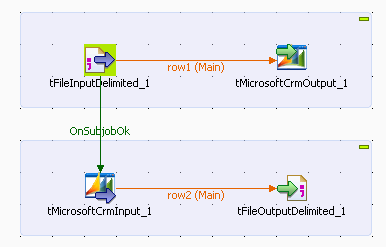
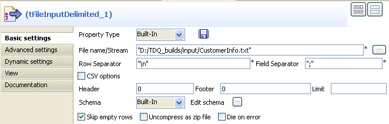
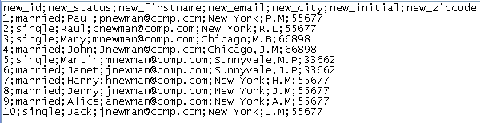
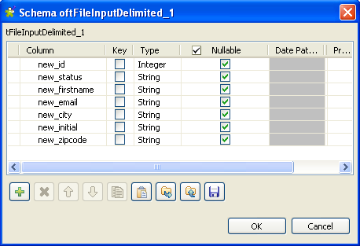
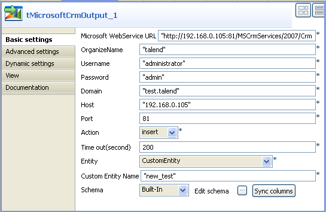
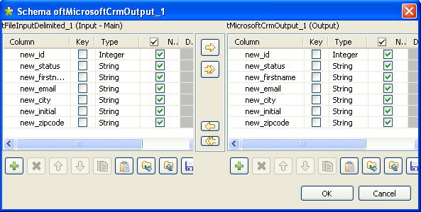
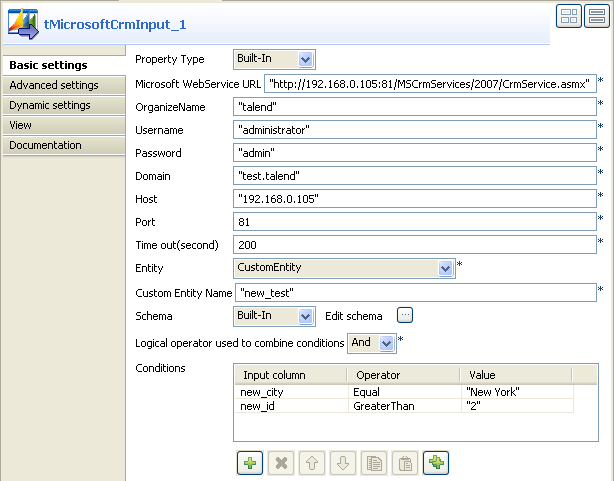
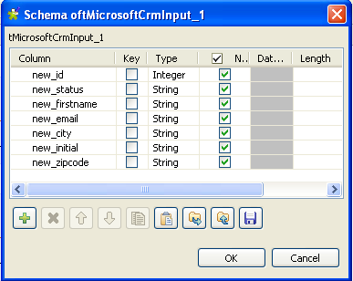
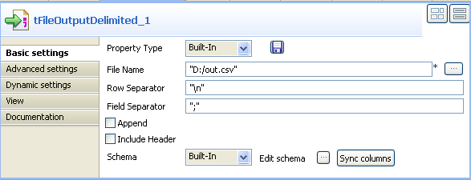

|
Famille de composant |
Business | |||||||
|
Fonction |
Le composant tMicrosoftCRMInput se connecte à une entité de la base de données MicrosoftCRM via le service Web adéquat. | |||||||
|
Objectif |
Ce composant permet d’extraire les données d’une base MicrosoftCRM selon certaines conditions définies dans des colonnes spécifiques. | |||||||
|
Basic settings |
Property type |
Peut être Built-in ou Repository. | ||||||
|
|
|
Built-in : Propriétés utilisées ponctuellement. | ||||||
|
|
|
Repository : Sélectionnez le fichier où sont stockées les propriétés du composant. Les champs suivants sont alors pré-remplis à l’aide des données collectées. | ||||||
|
|
Microsoft Webservice URL |
Saisissez l’URL du service Web permettant de se connecter à la base de données Microsoft CRM. | ||||||
|
|
Organizename |
Renseignez le nom de l’utilisateur ou de l’organisme, défini par un administrateur, qui veut accéder à la base de données MicrosoftCRM. | ||||||
|
|
Username et Password |
Saisissez les informations d’authentification de l’utilisateur au service Web. | ||||||
|
|
Domain |
Saisissez le nom de domaine du serveur sur lequel est hébergée la base MicrosoftCRM. | ||||||
|
|
Host |
Adresse IP du serveur de base de données. | ||||||
|
|
Port |
Numéro du port d’écoute du serveur. | ||||||
|
|
Time out (seconds) |
Nombre de secondes d’écoute du port avant sa fermeture. | ||||||
|
|
Entity |
Sélectionnez l’entité adéquate à partir de la liste déroulante. | ||||||
|
|
Schema et Edit Schema |
Un schéma est une description de lignes, i.e., il définit le nombre de champs qui sont traités et passés au composant suivant. Le schéma est soit local (built-in) soit distant dans le Repository. Cliquez sur Edit Schema pour modifier le schéma.
| ||||||
|
|
Logical operators used to combine conditions |
Si vous souhaitez combiner le filtrage simple et le mode avancé, sélectionnez l’opérateur permettant de combiner les deux modes. | ||||||
|
|
Conditions |
Les conditions sont exécutées les unes après les autres pour chaque ligne. Input column : Cliquez dans la cellule et sélectionnez la colonne du schéma d’entrée à laquelle attribuer la condition. Operator : Cliquez dans la cellule et sélectionnez l’opérateur pour relier la valeur à la colonne du schéma. Value : Saisissez la valeur filtrée entre guillemets, si nécessaire. Cliquez sur le bouton [+] pour ajouter autant de conditions que vous le souhaitez. | ||||||
|
Advanced settings |
tStatCatcher Statistics |
Cochez cette case pour collecter les données de log au niveau du composant. | ||||||
|
Utilisation |
Ce composant est généralement utilisé en tant que composant de début. Un composant de sortie est nécessaire. | |||||||
|
Limitation |
n/a | |||||||
Le scénario suivant décrit un Job à quatre composants qui a pour but l’écriture des données d’un fichier délimité en entrée dans une entité personnalisée d’une base de données MicrosoftCRM . Le Job permet ensuite d’extraire des lignes spécifiques jusque dans un fichier de sortie, en utilisant les conditions définies sur certaines colonnes d’entrée.
![[Avertissement]](../images/warning.png) | |
Si vous voulez écrire dans une Entité Personnalisée d’une base de données MicrosoftCRM, assurez-vous de nommer les colonnes conformément aux règles de syntaxe Microsoft, à savoir “name_columnname” en minuscules. |
A partir de la Palette, déposez les composants suivants dans l’éditeur graphique : tFileInputdelimited, tFileOutputDelimited, tMicrosoftCRMInput, et tMicrosoftCRMOutput.
Connectez le composant tFileInputDelimited au tMicrosoftCRMOutput à l’aide d’un lien de type Row Main.
Connectez le composant tMicrosoftCRMIntput au tFileOutputDelimited à l’aide d’un lien de type Row Main.
Connectez le composant tFileInputDelimited au tMicrosoftCRMInput à l’aide d’un lien de type OnSubjobOk.
Double-cliquez sur le composant tFileInputDelimited pour afficher la vue Basic settings et configurer ses paramètres de base.
Sélectionnez le mode Repository à partir de la liste déroulante Property Type si vous avez stocké les paramètres du fichier d’entrée sous le nœud Metadata de l’arborescence Repository. Dans le cas contraire, sélectionnez le mode Built-In et remplissez manuellement les champs correspondants. Dans cet exemple, les propriétés sont définies en mode Built-In.
Cliquez sur le bouton [...] à côté du champ File Name/Input Stream et parcourez vos dossiers jusqu’au fichier délimité contenant les données d’entrée. Dans cet exemple, le fichier d’entrée comprend les colonnes suivantes : new_id, new_status, new_firstname, new_email, new_city, new_initial et new_zipcode.
Dans le champ Row separator, définissez le séparateur de lignes permettant d’identifier les fins de ligne. De même, pour Field separator, définissez le séparateur de champs permettant de délimiter les différents champs pour chaque ligne.
Définissez, si nécessaire, le nombre de lignes d’en-tête (Header) et de pied-de-page (Footer) à ignorer, ainsi que le nombre maximum de lignes (Limit) que vous souhaitez traiter. Dans cet exemple, aucun de ces trois champs ne sont définis.
Cliquez sur Edit schema pour ouvrir une boîte de dialogue dans laquelle vous pouvez définir le schéma d’entrée que vous voulez écrire dans la base de données MicrosoftCRM.
- 
Cliquez sur OK pour fermer la boîte de dialogue.
Double-cliquez sur le composant tMicrosoftCRMOutput pour afficher la vue Basic settings et configurer ses paramètres de base.
Dans le champ Microsoft Web Service URL, saisissez l’URL du serveur Web Microsoft. Renseignez ensuite le nom (Username) ainsi que le mot de passe (Password) correspondants.
Dans le champ OrganizeName, saisissez l’identifiant qui porte les droits d’accès à la base de données MicrosoftCRM.
Dans le champ Domain, renseignez le nom de domaine du serveur sur lequel la base de données MicrosoftCRM est hébergée. Saisissez ensuite l’adresse IP (Host) et le numéro de port d’écoute (Port) du serveur.
A partir de la liste déroulante Action, sélectionnez l’opération que vous voulez effectuer. Dans cet exemple, le but est d’insérer (Insert) des données dans une entité personnalisée sur la base MicrosoftCRM.
Dans le champ Time out, définissez la limite de temps (en secondes) après laquelle le Job s’arrête automatiquement.
Dans la liste Entity, sélectionnez l’une des options proposées. Dans cet exemple, c’est l’option CustomEntity qui est sélectionnée.
![[Note]](../images/note.png)
Lorsque l’option CustomEntity est sélectionnée, le champ Custom Entity Name apparaît, dans lequel vous devez saisir le nom de l’entité personnalisée.
Le Schema est alors défini de manière automatique, en fonction de l’entité sélectionnée. Cliquez si nécessaire sur le bouton Edit schema pour afficher une boîte de dialogue à partir de laquelle vous pouvez modifier ce schéma et retirer les colonnes dont vous n’avez pas besoin en sortie.
Cliquez sur le bouton Sync columns pour récupérer le schéma du composant précédent.

Double-cliquez sur le composant tMicrosoftCRMInput pour afficher la vue Basic settings et configurer ses paramètres de base.
Sélectionnez le mode Repository à partir de la liste déroulante Property Type si vous avez stocké les paramètres du fichier d’entrée sous le nœud Metadata de l’arborescence Repository. Dans le cas contraire, sélectionnez le mode Built-In et remplissez manuellement les champs correspondants. Dans cet exemple, les propriétés sont définies en mode Built-In.
Dans le champ Microsoft Web Service URL, saisissez l’URL du serveur Web Microsoft. Renseignez ensuite le nom (Username) ainsi que le mot de passe (Password) correspondants.
Dans le champ OrganizeName, saisissez l’identifiant qui porte les droits d’accès à la base de données MicrosoftCRM.
Dans le champ Domain, renseignez le nom de domaine du serveur sur lequel la base de données MicrosoftCRM est hébergée. Saisissez ensuite l’adresse IP (Host) et le numéro du port d’écoute (Port) du serveur.
Dans la liste Entity, sélectionnez l’une des options proposées. Dans cet exemple, c’est l’option CustomEntity qui est sélectionnée.
Le Schema est alors défini de manière automatique, en fonction de l’entité sélectionnée, mais vous pouvez le modifier si nécessaire. Dans cet exemple, pour accéder à l’entité personnalisée, il faut définir le schéma manuellement. Copiez le schéma à sept colonnes à partir du composant tMicrosoftCRMOutput et collez-le dans la boîte de dialogue du tMicrosoftCRMInput.
Cliquez sur le bouton OK pour fermer la boîte de dialogue. Un message pop-up vous proposera de propager les modifications : cliquez sur le bouton Yes.
Dans la vue Basic settings, sélectionnez l’opérateur logique And ou Or à utiliser pour combiner les conditions définies dans les colonnes d’entrée. Dans cet exemple, pour définir deux conditions sur deux colonnes d’entrée différentes, il faut utiliser l’opérateur logique And.
Dans la zone Condition, cliquez sur le bouton [...] pour ajouter autant de lignes que nécessaire, puis cliquez dans chaque ligne et sélectionnez, à partir de la liste déroulante Input column, la colonne sur laquelle appliquer la condition. Dans cet exemple, les deux colonnes new-city et new_id portent des conditions. Le but est d’extraire toutes les lignes concernant les clients dont la ville correspond à “New York” et dont l’identifiant est supérieur à 2.
Cliquez dans chaque ligne et sélectionnez, à partir de la liste déroulante Operator, l’opérateur à utiliser pour relier la colonne d’entrée avec sa valeur associée. Dans cet exemple, l’opérateur Equal est sélectionné pour la colonne new_city et Greater Than pour new_id.
Cliquez dans chaque ligne et définissez, dans la colonne Value, la valeur des colonnes d’entrée :
New Yorkpour la colonne new_city et2pour new_id dans cet exemple. Il est possible d’utiliser une valeur fixe aussi bien qu’une valeur de contexte dans ce champ.
Double-cliquez sur le composant tFileOutputdelimited pour afficher la vue Basic settings et configurer ses paramètres de base.
Sélectionnez le mode Built-In à partir de la liste déroulante Property Type puis cliquez sur le bouton [...] à côté du champ pour parcourir vos dossiers jusqu’au fichier de sortie.
Définissez les séparateurs de lignes (Row separator) et de champs (Field separator).
Cochez la case Append pour ajouter des lignes à la fin des entrées de la base de données.
Cochez la case Include Header si le fichier de sortie comprend un en-tête.
Cliquez sur le bouton Sync columns pour récupérer le schéma à partir du composant précédent.